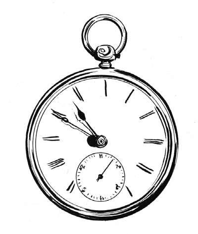

除教堂的钟楼外，时间和时钟一般只能是有钱人的专享，其计时价值往往是次要的，主要作为财富和时尚的象征。对于怀表，尤其如此。据说，怀表的发明是为了配合17世纪晚期一种新兴的服装时尚——马甲。
事实上，马甲在当时并不仅仅只是时尚。热爱时尚，喜爱佩戴假发的英格兰、苏格兰和爱尔兰国王查理二世（King Charles II）在斯图亚特王朝复辟期间 [5] ，将“马甲背心”确定为皇室服装之一。作家塞缪尔·佩皮斯（Samuel Pepys）在1666年10月的日记中写道：“国王昨天在议会宣布了他创造服装新时尚的坚定决心。他说的应该是马甲背心，对此我持怀疑态度。”
在怀表不断发展中，它逐渐拥有了贴身的盖子和圆润的边角，因而可以很轻巧地滑入马甲或背心的口袋中。